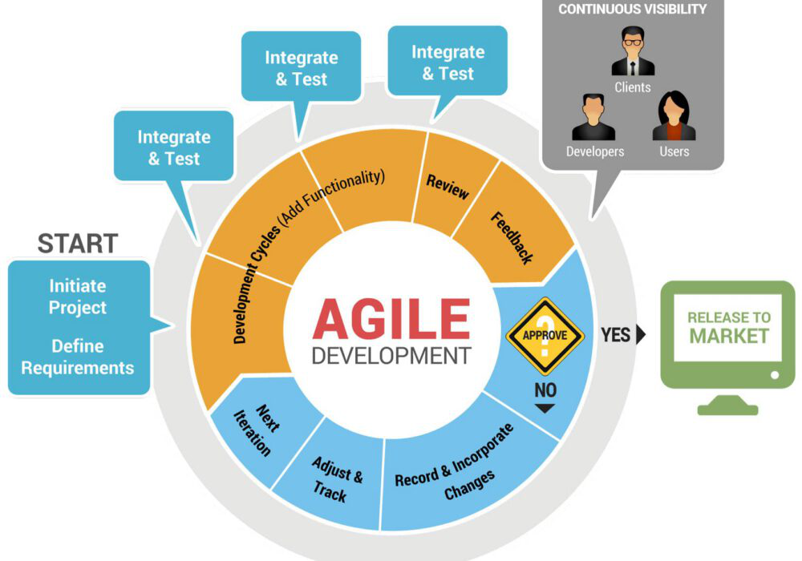

🔍 Description du modèle
Le développement Agile est une approche centrée sur la flexibilité, l’adaptation rapide au changement, et la collaboration étroite avec les utilisateurs. Le produit est développé progressivement, via des cycles courts et répétés appelés sprints.
🖼️ Schéma illustratif
⚙️ Fonctionnement typique d’un cycle Agile
- Définition du backlog produit (fonctionnalités souhaitées)
- Planification du sprint (sélection des tâches à réaliser)
- Développement quotidien et réunions (Daily Stand-ups)
- Revue et démonstration du produit livré
- Rétrospective pour améliorer le processus du prochain sprint
✅ Avantages
- Très haute flexibilité et capacité d’adaptation aux changements
- Livraisons fréquentes apportant rapidement de la valeur
- Collaboration étroite avec les utilisateurs et parties prenantes
- Haute visibilité sur l'avancement réel du projet
❌ Inconvénients
- Nécessite une forte implication des utilisateurs et une équipe autonome
- Documentation souvent minimale
- Difficulté potentielle à prévoir précisément coûts et délais
📋 Cas d’utilisation typiques
- Projets dynamiques avec exigences fréquemment changeantes
- Projets orientés vers la satisfaction rapide du client et le retour sur investissement rapide
🧪 Rôle des tests dans ce modèle
Les tests sont continus, fréquents, et généralement automatisés, permettant d’assurer la qualité constante du logiciel produit.
- Tests automatisés unitaires et d'intégration
- Tests fonctionnels réguliers à chaque sprint
- Tests exploratoires fréquents
- Tests d'acceptation menés par les utilisateurs finaux